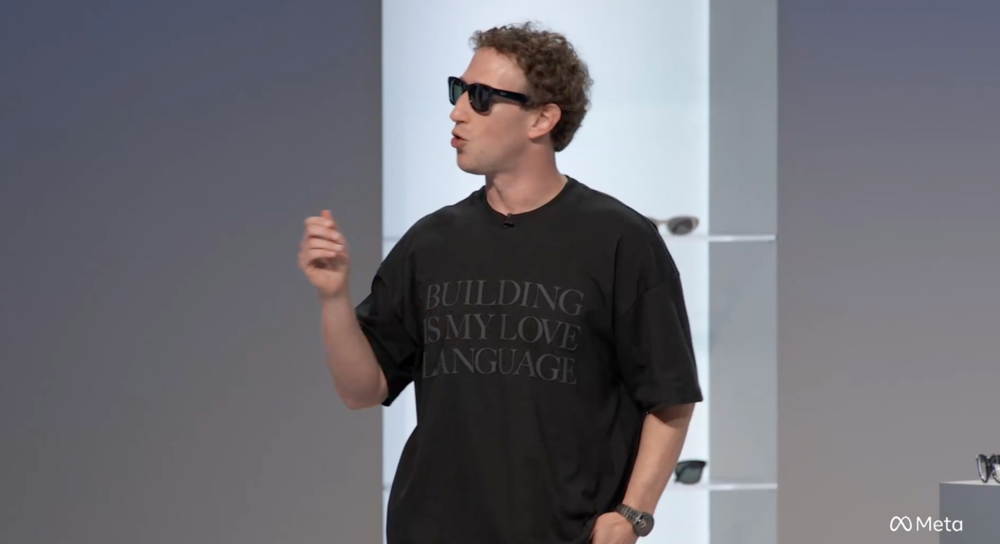

О сделке в среду сообщил сначала Axios, затем её подтвердила сама Meta изданию TechCrunch, уточнений и суммы не раскрыв. Точку поставил сам стартап: в блоге Conductor вышел анонс «Conductor is joining Meta» — официальное сообщение о присоединении к Meta.
Компанию основал в 2024 году Чарли Холтз, ключевой продукт запустился прошлым летом. Идея — не один умный автодополнитель, а «команда»: инженер запускает сразу нескольких ИИ-агентов, каждый работает над своей изолированной частью проекта, агенты общаются между собой, а результат сводится в PR. Работает это в облаке, локально на Mac и даже через телефон. Своих моделей у Conductor нет — платформа нанимает «музыкантов» у чужих лабораторий, в основном Anthropic и OpenAI.
Conductor Cloud переведут в режим «только чтение» 13 ноября и отключат 20 ноября, после чего облачные данные начнут удалять — workspace можно заранее перенести на Mac, а выгрузить всё через настройки. Локальная версия будет получать новые модели и критические исправления до начала 2027 года.
Холтз написал, что «безумно рад» работать с Александром Вангом, главным ИИ-офицером Meta, и Натом Фридманом, главой продуктов Superintelligence Labs, — туда он и уходит с командой. Meta последние месяцы лихорадно достраивает ИИ-линейку: в августе запустила собственный кодинг-агент Muse Code, агенты Muse пересекли отметку в 10 млн загрузок за 40 дней, а ранее компания уже купила агентную соцсеть Moltbook. Покупка оркестратора агентов — шаг от «своей модели» к «среде, где эти модели приносят деньги».
Гонка идёт с двух сторон: буквально за день до этого OpenAI объявила о покупке Pierre — стартапа, чей движок обозревает код на GitHub. Похоже, лабораториям больше не достаточно продавать модели по подписке: каждая хочет владеть самим рабочим местом программиста.